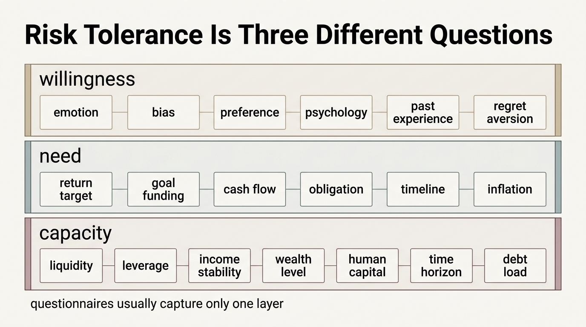
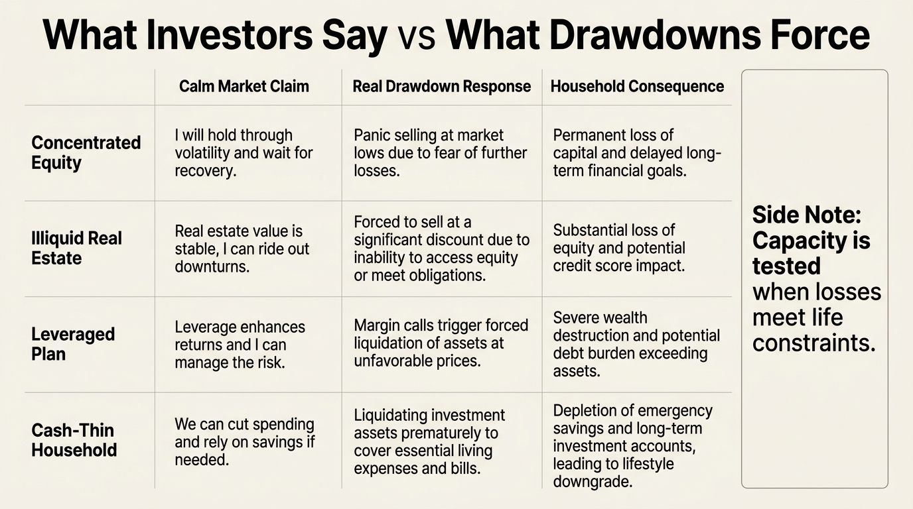

The Risk Tolerance Illusion
Most investors answer risk-tolerance questions as if risk were a personality trait. It is not. The real risk budget of a household is an unstable combination of psychology, liquidity, leverage, income security, time horizon, and the size of the drawdown that has not happened yet.
This is why so many households discover their true tolerance only after losses arrive. Bull markets make many investors look braver than they are. High cash flow makes some households look sturdier than they are. Long-run spreadsheets make some plans look diversified when, in practice, one job market, one asset class, and one housing regime still dominate the whole balance sheet.
Core thesis: stated risk tolerance is often an illusion because it measures recent mood, narrative confidence, or aspiration more than decision quality under actual stress. A usable risk framework has to separate willingness to take risk from need to take risk and capacity to survive it.

Willingness Is Not Capacity
A household may feel comfortable owning volatile assets and still be structurally unable to carry the downside. That happens when emergency reserves are thin, income is cyclical, debt service is rigid, or near-term spending needs depend on assets that can drop sharply. In that situation the investor may sincerely report high tolerance. The balance sheet does not agree.
The reverse error also exists. Some households report low tolerance because they dislike volatility, even though they have strong liquidity, modest leverage, diversified earning power, and long time horizons. Their discomfort is real, but their economic capacity is stronger than their questionnaire answer suggests. This is why risk cannot be reduced to self-description alone.
Bull Markets Manufacture False Tolerance
During long upswings, rising asset values and stable employment create a temporary sense of risk mastery. Investors start reading recent survival as proof of permanent resilience. Concentrated positions feel manageable because they have not yet met a regime that punishes them. Illiquid allocations feel disciplined because no one needs the cash. Leverage feels efficient because refinancing and income still look easy.
That is the illusion. Risk tolerance inferred from good times is usually contaminated by the regime itself. A household that tolerated paper volatility in a rising market has not proved it can tolerate the same volatility during layoffs, refinancing stress, or correlated drawdowns. What looked like conviction may have been borrowed calm.
Drawdowns Reveal The Balance-Sheet Truth
Real tolerance is revealed when losses interact with life constraints. A thirty percent portfolio drawdown means something very different to a debt-free dual-earner household with two years of liquidity than it does to a highly compensated employee whose stock exposure, bonus pool, and labor market all depend on the same sector. The headline loss is the same. The stress architecture is not.
This is why WealthMeter keeps returning to concentration, liquidity, and optionality. Drawdowns are not merely emotional events. They can change the terms of financing, reduce bargaining power, delay career moves, trigger tax consequences, or force asset sales when prices are weak. True tolerance therefore lives at the intersection of market loss and household fragility.
| Risk dimension | What it measures | How illusion enters |
|---|---|---|
| Willingness | How much volatility an investor says feels acceptable | Answers drift with recent gains, narrative confidence, and social comparison |
| Need | How much return pressure the plan requires to meet objectives | Return targets are often inflated while spending flexibility is understated |
| Capacity | How much downside the household can survive without forced change | Liquidity, leverage, and job correlation are often ignored or underweighted |
| Behavior under stress | What the investor actually does during losses | Questionnaires predict this poorly when conditions become personal |
The Most Common Category Error
The most common mistake is confusing portfolio volatility with total household risk. A household can reduce portfolio variance and still increase total fragility if it overconcentrates in employer stock, keeps too little cash, or locks itself into a housing and spending structure that requires uninterrupted income. It can also accept more portfolio volatility while becoming safer overall if reserves are strong, liabilities are modest, and the time horizon is long enough to avoid forced selling.
This is the correct frame for articles like The Loss Aversion Tax, The Overconfidence Cycle, and The Concentration vs Diversification Tradeoff. The issue is not simply how an investor feels about red screens. It is whether the household can keep making good decisions after one appears.

What A Decision-Grade Risk Framework Looks Like
A decision-grade framework starts with survival math. How many months of spending are liquid and uncorrelated to the main risk assets? What happens if income drops while markets fall? Which assets can be sold without permanent damage, tax distortion, or penalty? How much of the household story depends on one employer, one city, one property market, or one asset regime?
Only after that should the investor ask the softer question of emotional tolerance. Psychology still matters. An investor who cannot hold an allocation through plausible volatility should not own it at that size. The correction is to put psychology in the right order. It is one layer of the risk budget, not the whole budget.
- Stress-test the household, not just the brokerage account.
- Measure liquidity runway before discussing aggressive return targets.
- Separate correlated human-capital risk from financial-capital risk.
- Define drawdown responses before the drawdown arrives.
- Revisit risk tolerance after major life changes, not only after market moves.
Known, Inferred, And Unknown
| Category | Assessment |
|---|---|
| Known | Behavioral-finance research shows that people evaluate losses asymmetrically and that recent experience can distort how much risk they believe they can bear. |
| Known | Household outcomes depend on more than market volatility alone; liquidity, leverage, income stability, and concentration materially shape whether a drawdown becomes survivable or disruptive. |
| Known | Investors often overestimate tolerance during benign markets and under-measure correlated risks between career income, housing, and portfolio exposure. |
| Inferred | Many standard risk-tolerance questionnaires are too static to capture regime shifts, household fragility, and the difference between calm-market confidence and real stress behavior. |
| Unknown | Which practical advisory systems best combine behavioral assessment with household stress testing without pushing investors into either false bravado or unnecessary defensiveness. |
The Practical Correction
The useful correction is not to become less ambitious. It is to become more precise. Investors should stop asking whether they are conservative or aggressive and start asking how much correlated downside the household can absorb without selling optionality, breaking spending stability, or degrading future earnings power.
That is why the risk tolerance illusion belongs on the same structural map as leverage, concentration, and liquidity traps. Wealth is not protected by feeling brave. It is protected by designing a balance sheet that stays governable when bravery stops being easy.
Source Frame
This analysis relies on durable behavioral-finance structure rather than one new study: prospect theory, myopic loss aversion, household risk-tolerance survey work, and the broader planning literature on liquidity, leverage, and sequence sensitivity.
The unsettled question is not whether investors misread tolerance. It is how to build measurement systems that combine psychology with real household fragility before the next stress regime performs that measurement more harshly.